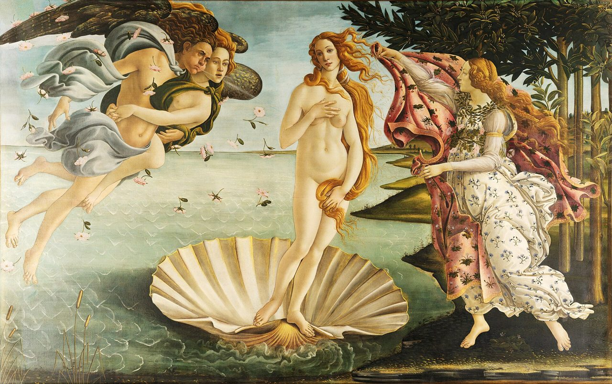

← 藝術101名畫背後的故事 EP01
維納斯的誕生
波提切利・約 1484–1486

她站不穩，卻站了五百年。
一幅從泡沫裡誕生的畫
《維納斯的誕生》大約畫在1484–1486年的佛羅倫斯。愛神從海浪泡沫裡誕生，左邊的西風之神把她吹上岸，右邊的季節女神拿著繡花斗篷等著。據說訂畫的是梅迪奇家族的人，但沒有留下訂單紀錄。
她的身體，其實不合理
脖子太長、左肩斜得太陡，貝殼上的雙腳把重心幾乎全放在一條腿上。真人這樣站，幾秒就倒了。
為什麼故意畫錯？
波提切利在乎的是一條從頭髮流到腳尖的線。他放掉解剖的正確，換來五百年都看不膩的優雅。
下次看到它，先看這裡
她的長脖子與左肩 脖子拉長，左肩一路斜落到手臂
貝殼上的雙腳 重心偏到單腿，這姿勢站不住
左邊的西風之神 兩位風神抱在一起鼓臉吹氣
作品資料
波提切利（Sandro Botticelli）
《維納斯的誕生》The Birth of Venus，約 1484–1486
畫布、蛋彩 172.5 × 278.5 公分
義大利佛羅倫斯 烏菲茲美術館
《維納斯的誕生》The Birth of Venus，約 1484–1486
畫布、蛋彩 172.5 × 278.5 公分
義大利佛羅倫斯 烏菲茲美術館